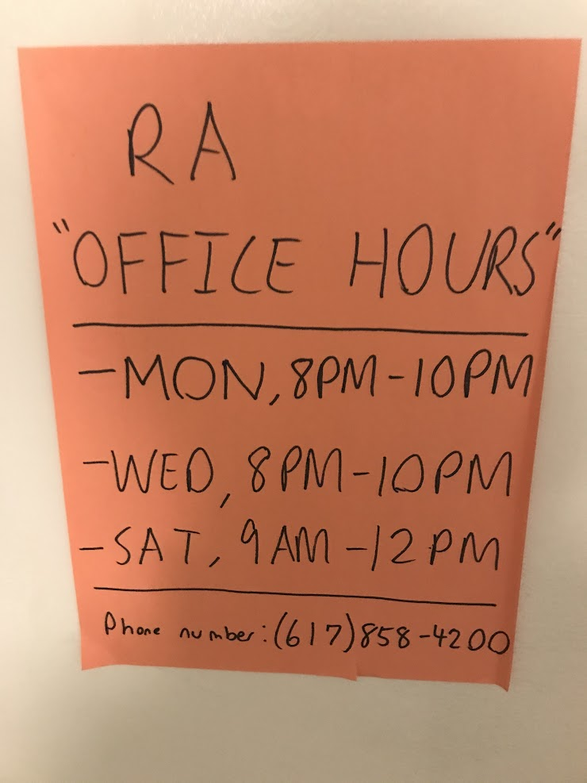

Based on general facts about the dorm building Carmichael Hall in Fall 2020.
You are currently in learn mode. To switch to test mode, click here.
1. True or False: Carmichael Hall has a total of 5 floors (not including the basement).
2. True or False: The Carmichael Hall elevator is next to the vending machines on the 1st floor.
3. True or False: Gender neutral bathrooms are located on the first floor.
4. True or False: An HDMI cable can be used to connect a laptop to the TV on the first floor.
5. True or False: The laundry room has a total of 5 washers and 6 dryers.
6. True or False: The ping-pong table is in the second floor common room.
7. True or False: There are a total of 4 ceiling fans in the first floor common room.
8. True or False: There are 18 steps between the second and third floor.
9. True or False: Carmichael Hall is closer to Tisch Library than Houston or Miller is to Tisch Library.
10. True or False: The bike storage room is on the opposite side of the first floor common room as the laundry room.
11. True or False: There is no bathroom on the fourth floor.
12. True or False: Room 100-B (printer/vending machine room) contains a foosball table.
13. True or False: Based on the sign in the stairwell, the third floor is at an elevation of 35,000 feet.
14. True or False: All names on the doors of residents on the second floor are above a picture of Shrek.
15. True or False: The maximum occupancy of the kitchen (100-C) is 3.
16. True or False: There is no way to return to the first floor common room after getting food from the dining center without going outside or breaking COVID restrictions.
17. Immediately upon leaving Carmichael Hall from the first floor common room, what lies straight ahead?
18. You are in line to get food from Carmichael Dining Center. Which of the following food items would you encounter first (assuming you are properly following Carmichael's traffic flow)?
19. Using one washer and one dryer has a combined cost of how much money in JumboCash?
20. If you are looking directly out of the laundry room window, you are facing
Hint: Use the compass app on your phone.
21. Room 100-C (the kitchen) contains all of the following EXCEPT...
22. Which of the following is NOT on the "Carmmunity" sign in the first floor common room?
23. This sign is located on which floor?
